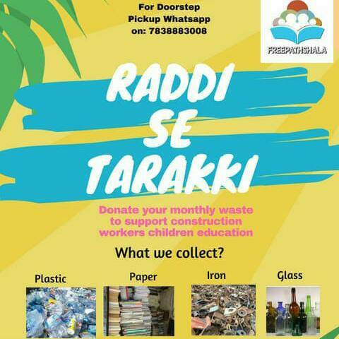

An initiative where you can dispose your dry waste responsibly & ensure construction workers kids get continues education.
This is a 3.5 year program from freepathshala where in we generate funds to run freepathshala through accepting monthly dry
waste as donation from residents of Gurgaon.
Currently most of the house hold either throw dry waste or give it to Kabadi wala. Amount received from kabadi is so small that
it never contribute to house hold economy. Freepathshala is supported by 40+ Kabadi spread across Gurgaon who are doing this pickup
and pay that amount to us instead of paying to residents.
We are supported by 800+ families spread across Gurgaon, where in we schedule pickups as per your convenience and pickups are done
by regular kabadi from your areas so that we do not disturb their regular income.
What do we collect: Anything & everything what your local kabadi was accepting till date.
How many times we can collect from your house / society: We can do pickup multiple times in a week during the day.
What we don’t collect: wet waste, Low value plastic ( Polythene , milk packets, chips packets , wrappers.
Do we collect Ewaste - Yes we have tied up with a approved e waste recyclers. We would need 7-10 days time for E waste Pickups.